Pans
From Nikkis
Las sartenes son una herramienta clave para el jugador en Prospecting! Son vitales para progresar.
Generalmente se los puede encontrar cerca de los comerciantes , junto con sus contrapartes shovels
Ciertos tipos de sartenes también incluyen estadísticas pasivas únicas.
▲ Lista de Pans
| Apariencia | Nombre/Descripción | Precio | Estadísticas | Ubicación |
|---|---|---|---|---|
| 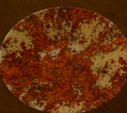 | Rusty Pan Una sartén oxidada para buscar oro. |
Gratis |
Suerte: 1 Capacidad: 5 Fuerza de batido: 0.2 Velocidad de agitación: 0.8 Pasiva: Ninguna |
Se entrega al jugador al unirse. |
| 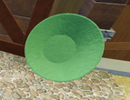 | Plastic Pan Una sartén ligera fabricada con plástico resistente al desgaste. |
$500 |
Suerte: 1.5 Capacidad: 10 Fuerza de batido: 0.4 Velocidad de agitación: 0.8 Pasiva: Ninguna |
Rubble Creek |
| 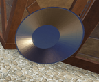 | Metal Pan Una sartén de metal grande y pesada, hecha de chapa metálica. |
$12,000 |
Suerte: 2 Capacidad: 20 Fuerza de batido: 0.5 Velocidad de agitación: 0.8 Pasiva: Ninguna |
Rubble Creek |
| 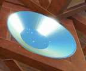 | Silver Pan Una sartén de plata brillante. |
$55,000 |
Suerte: 4 Capacidad: 30 Fuerza de batido: 0.8 Velocidad de agitación: 0.9 Pasiva: Ninguna |
Rubble Creek |
| 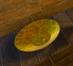 | Golden Pan Una sartén bañada en oro y tallada con intrincados diseños. Proporciona un gran impulso de suerte. |
$333,000 |
Suerte: 10 Capacidad: 35 Fuerza de batido: 1 Velocidad de agitación: 0.8 Pasiva: Ninguna |
Fortune River |
| 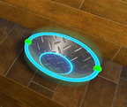 | Magnetic Pan Una bandeja con imán incorporado. Los minerales recolectados tienen un 25 % más de peso. |
$1,000,000 |
Suerte: 15 Capacidad: 50 Fuerza de batido: 1 Velocidad de agitación: 0.75 Pasiva: +25% de aumento de tamaño |
Fortune River |
| 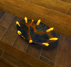 | Meteoric Pan Una sartén forjada con hierro meteórico. Tiene mayor probabilidad de encontrar modificadores. |
$3,500,000 |
Suerte: 22 Capacidad: 70 Fuerza de batido: 2 Velociad de agitación: 1 Pasiva: +25% de aumento de modificador |
Fortune River |
| 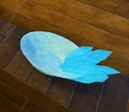 | Diamond Pan Una sartén con incrustaciones de diamantes con una durabilidad y resistencia increíbles. |
$10,000,000 |
Suerte: 35 Capacidad: 100 Fuerza de batido: 3 Velocidad de agitación: 1 Pasiva: +10% de aumento de modificador, +10% de aumento de tamaño |
Fortune River |
| 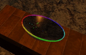 | Aurora Pan Una sartén llena de luz. |
$35,000,000 |
Suerte: 50 Capacidad: 130 Fuerza de batido: 3 Velocidad de agitación: 1.25 Pasiva: +25% de aumento de modificiador |
Crystal Cavern River |
| 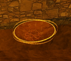 | Worldshaker Una reliquia de una antigua civilización. A pesar de su antigüedad, aún alberga un inmenso poder. |
$125,000,000 |
Suerte: 70 Capacidad: 150 Fuerza de batido: 5 Velocidad de agitación: 1 Pasiva: +25% de aumento de tamaño |
Waterfall Temple |
| 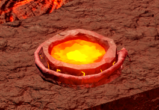 | Dragonflame Pan Una sartén abrasadora que derrite la arena. Sin embargo, su calor reduce el tamaño del mineral en un 10%. |
$400,000,000 |
Suerte: 150 Capacidad: 180 Fuerza de batido: 10 Velocidad de agitación: 1.1 Pasiva: -10% aumento de tamaño |
The Magma Furnace |
| 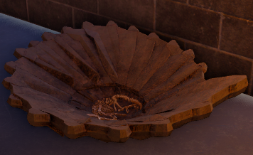 | Fossilized Pan Una sartén de hueso antigua que se ha fosilizado con el tiempo. |
$1 Billón |
Suerte: 200 Capacidad: 225 Fuerza de batido: 8 Velocidad de agitación: 1 Pasiva: +50% de aumento de modificador |
Ancient Ruins |
| 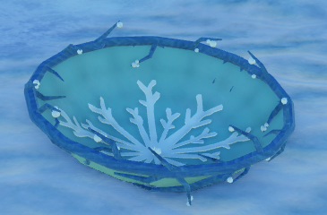 | Frostbite Pan Una sartén congelada de las profundidades de la montaña. |
$10 Billones |
Suerte: 300 Capacidad: 250 Fuerza de batido: 15 Velocidad de agitación: 0.8 Pasiva: +25% de aumento de tamaño |
Frozen Peak |
▲ Pans por tiempo limitado
| Apariencia | Nombre/Descripción | Precio | Estadísticas | Ubicación |
|---|---|---|---|---|
| 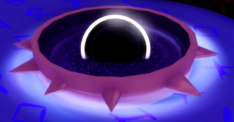 | Galactic Pan Una sartén con una inmensa capacidad, formada a partir de las estrellas. Tiene la posibilidad de otorgar "Voidtorn" a los objetos encontrados. |
$2 Billones |
Suerte: 100 Capacidad: 500 Fuerza de batido: 25 Velocidad de agitación: 1 Pasiva: Tiene la posibilidad de otorgar objetos a Voidtorn |
The Void |